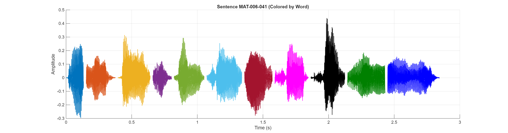

Sentence Audio:
Waveform:
| # | ID | Hanji | POJ |
|---|---|---|---|
| 1 | MAT-006-041-0002 | 恁 | lín |
| 2 | MAT-006-041-0003 | 的 | ê |
| 3 | MAT-006-041-0004 | 父 | Pē |
| 4 | MAT-006-041-0005 | 已 | í |
| 5 | MAT-006-041-0006 | 經 | keng |
| 6 | MAT-006-041-0007 | 知 | chai |
| 7 | MAT-006-041-0008 | 恁 | lín |
| 8 | MAT-006-041-0009 | 所 | só͘ |
| 9 | MAT-006-041-0010 | 欠 | khiàm |
| 10 | MAT-006-041-0011 | 用 | ēng |
| 11 | MAT-006-041-0012 | 的 | ê |